Personal · AI Tool
Agent Forge
A multi-agent app builder that runs in your browser: a planner writes a spec, a coder writes a single-file HTML app and a reviewer fixes bugs, all on a local LLM through WebLLM.
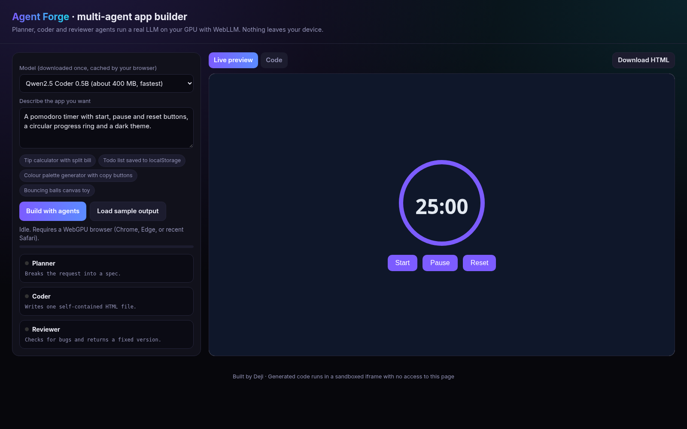
Hover / tap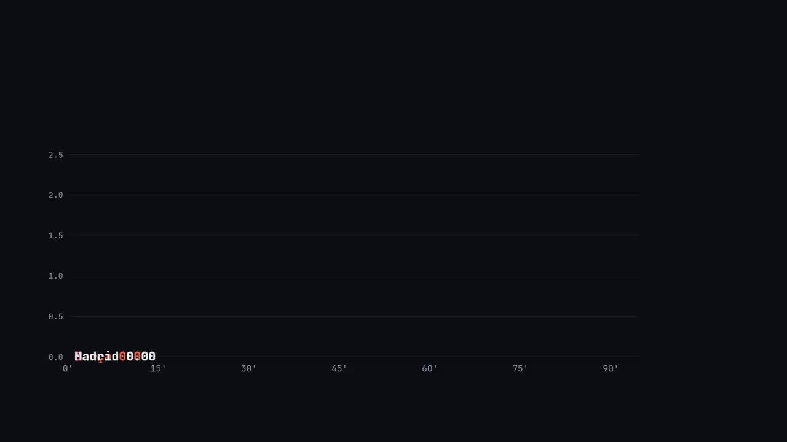
Projects slide in on the conveyor as you scroll
Personal · AI Tool
A multi-agent app builder that runs in your browser: a planner writes a spec, a coder writes a single-file HTML app and a reviewer fixes bugs, all on a local LLM through WebLLM.

Hover / tapPersonal · 3D Simulation
A three.js digital twin of a warehouse floor where autonomous robots take orders, plan routes with A*, pick from racks and deliver to packing stations without colliding. All data is simulated.
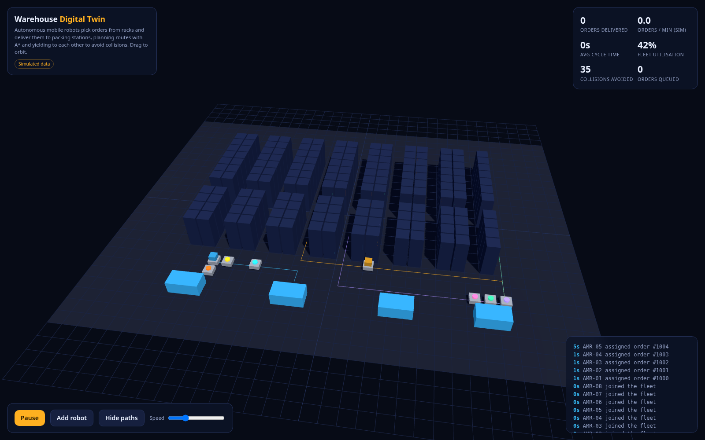
Hover / tapPersonal · 3D Simulation
A 3D agent-based city traffic simulation where every car follows the Intelligent Driver Model, comparing fixed-time, max-pressure and green-wave signals with live KPIs and a built-in benchmark.
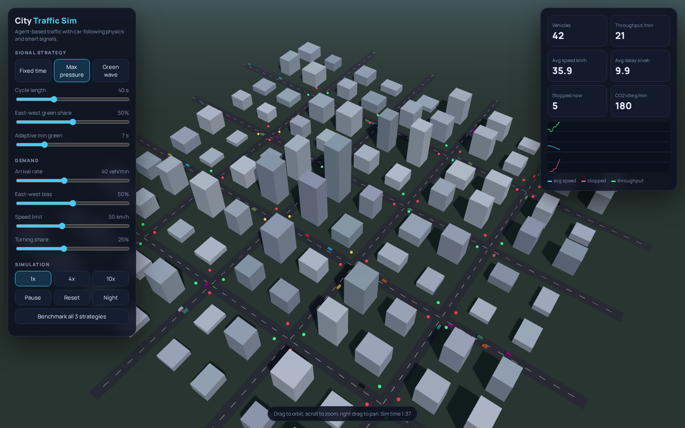
Hover / tapPersonal · Data Viz
Football analytics for six European leagues: live tables, form, shot maps and xG.
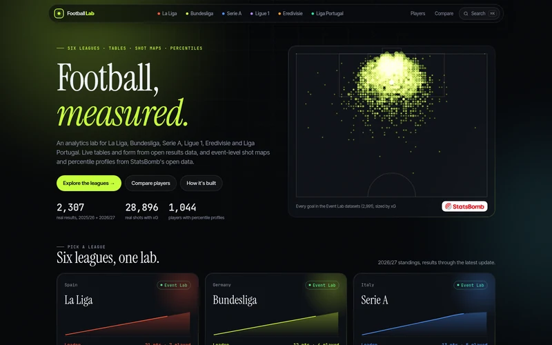
Hover / tap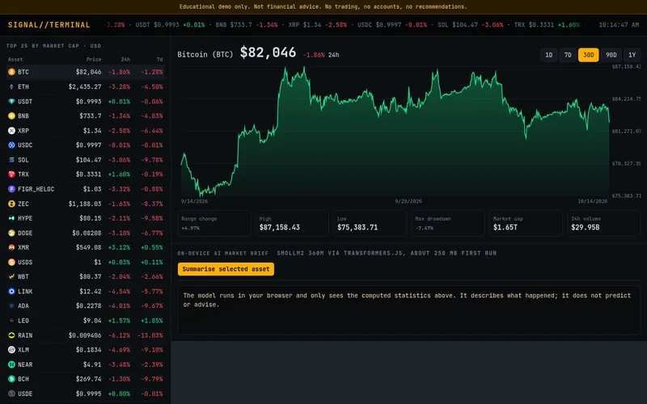
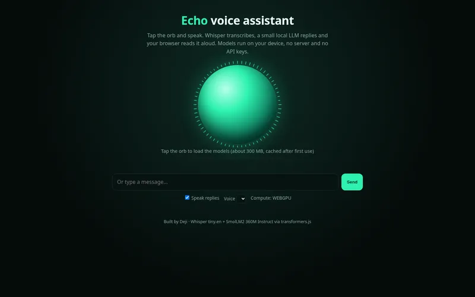
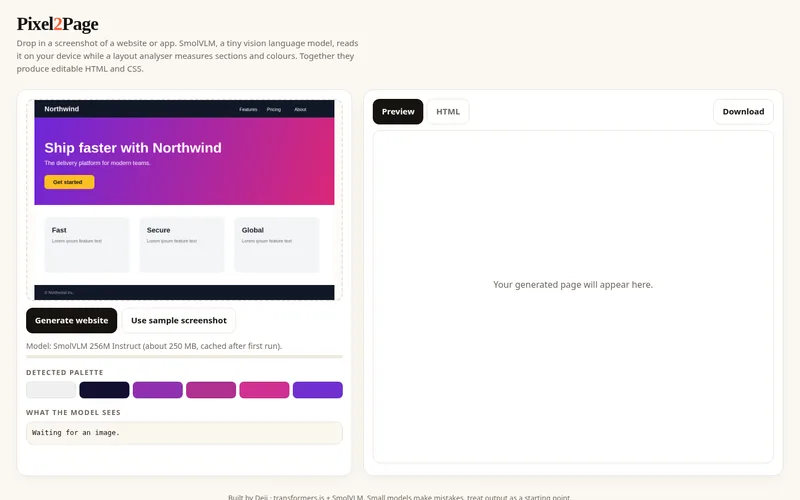
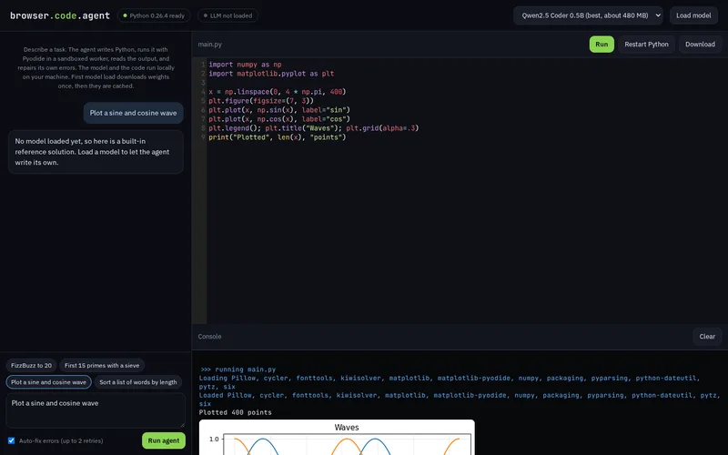
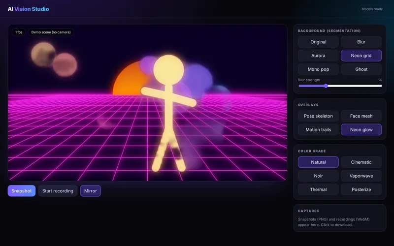
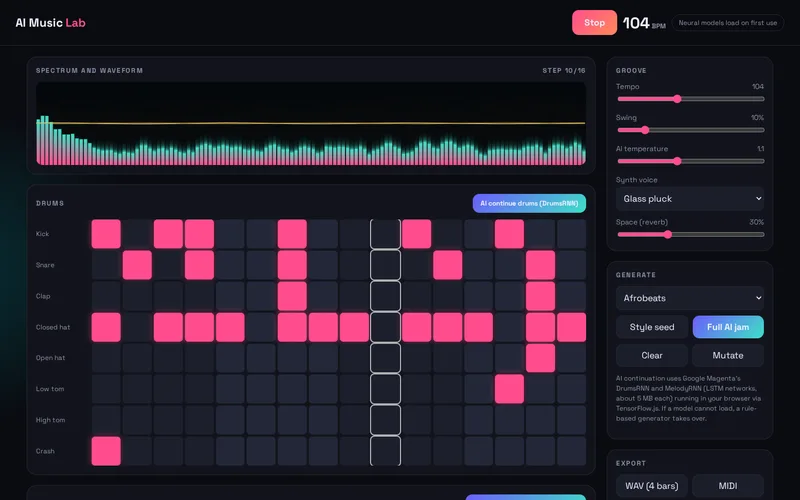
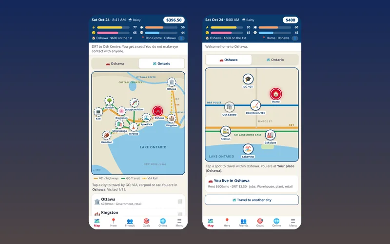
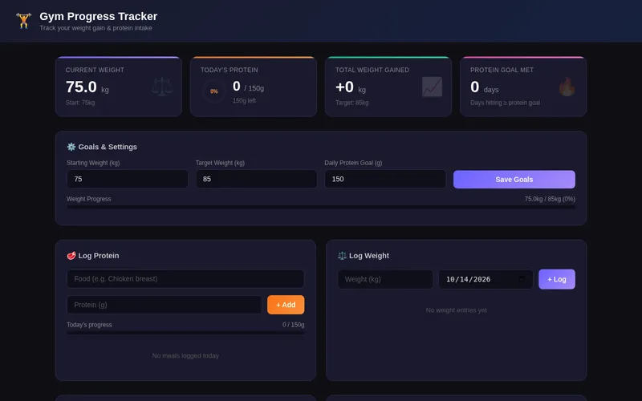
I'm Joseph Bepo, Deji to most people, based in Oshawa, Ontario. I studied Mechanical Engineering at Obafemi Awolowo University and Computer Programming at Durham College, where I made the Honor Roll. I build browser apps, 3D simulations and AI tools that run on your own device, and I bring the same care for accurate data from hands-on SAP and WMS-driven warehouse work. Currently Shipping/Receiving Team Lead at Lactalis Canada, Oshawa (since June 2025). Let's build something useful together!
Hire me